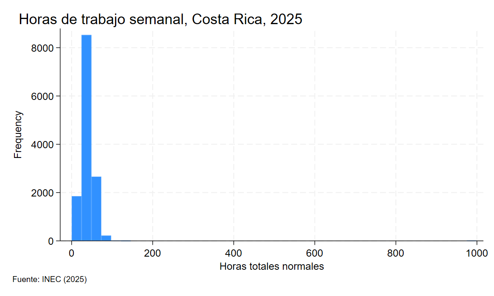

Medidas de dispersión y forma
Cargar datos
Varianza dentro y entre grupos
Para este ejercicio trataremos de estimar la variabilidad dentro y entre grupos de las horas trabajadas entre hombres y mujeres.
Al igual que en ejercicios anteriores, lo primero y más importante siempre es asegurarse de limpiar los datos antes de realizar cualquier análisis
Para esto podemos empezar por hacer un histograma y tabular los datos de las horas trabajadas por semana, variable hortotnorm

Note que en el histograma tenemos valores cercanos a mil, lo cual no tiene sentido, pues implicaría que hay personas que trabajan mil horas a la semana
Podemos comprobar esto viendo los valores mínimos y máximos con summarize
Resultado
Horas totales normales
-------------------------------------------------------------
Percentiles Smallest
1% 1 0
5% 10 0
10% 20 0 Obs 13,275
25% 40 0 Sum of wgt. 13,275
50% 48 Mean 43.24008
Largest Std. dev. 28.12638
75% 48 999
90% 60 999 Variance 791.0931
95% 68 999 Skewness 23.55561
99% 84 999 Kurtosis 804.0196
Resultado
Horas totales normales
-------------------------------------------------------------
Percentiles Smallest
1% 5 1
5% 12 1
10% 20 1 Obs 13,139
25% 40 1 Sum of wgt. 13,139
50% 48 Mean 43.07938
Largest Std. dev. 14.99351
75% 48 99
90% 60 108 Variance 224.8053
95% 68 112 Skewness -.3558878
99% 84 126 Kurtosis 4.072578
Una vez que limpiamos los datos podemos proceder con el análisis de la varianza
oneway
El comando
onewaynos permite descomponer la variabilidad en 2 componentes, uno correspondiente a diferencias entre grupos y otro correspondiente a diferencias dentro de cada grupo
Resultado
Analysis of variance
Source SS df MS F Prob > F
------------------------------------------------------------------------
Between groups 139142.125 1 139142.125 649.50 0.0000
Within groups 2814350.08 13137 214.230805
------------------------------------------------------------------------
Total 2953492.2 13138 224.805313
El comando oneway nos devuelve las desviaciones divididas entre grupos y dentro de grupos. Para acceder a los atributos podemos ver la lista de variables con return list
return list
Cuando corremos diferentes comandos como summarize, oneway y muchos más,
Statanos permite acceder a los resultados usandor(el dato que queremos). La lista de datos disponibles la podemos ver conreturn list
scalars:
r(N) = 13139
r(mss) = 139142.1245317645
r(df_m) = 1
r(rss) = 2814350.080050015
r(df_r) = 13137
r(F) = 649.4963447977681
r(chi2bart) = 47.69748789196146
r(df_bart) = 1
matrices:
r(ANOVA) : 3 x 5
En este caso nos interesan los siguientes datos
| Entrada | Significado |
|---|---|
rss |
suma de desviaciones dentro de grupos |
mss |
suma de desviaciones entre grupos |
N |
Numero de observaciones |
scalar suma_var_dentro = r(rss) // Suma de desviaciones dentro de cada grupo
scalar suma_var_entre = r(mss) // Suma de desviaciones entre grupos
scalar N = r(N) // Total de observaciones
Note que la suma de las desviaciones no corresponde a la varianza aún, recuerde que la fórmula se escribe como
Cuidado
Tenemos la parte de arriba de cada fracción (la suma de las desviaciones), pero aún nos falta dividir entre el total de observaciones
// Calculamos la varianza dentro y entre e interpretamos (recuerde que la
// varianza entre indica cuanta de la variabilidad en el tamaño de los hogares es explicada por la condición de pobreza)
scalar var_dentro = suma_var_dentro/N
scalar var_entre = suma_var_entre/N
display "Varianza dentro -> " var_dentro
display "Varianza entre -> " var_entre
Note que la suma corresponde a la varianza total
Varianza poblacional
Horas totales normales
-------------------------------------------------------------
Percentiles Smallest
1% 5 1
5% 12 1
10% 20 1 Obs 13,139
25% 40 1 Sum of wgt. 13,139
50% 48 Mean 43.07938
Largest Std. dev. 14.99351
75% 48 99
90% 60 108 Variance 224.8053
95% 68 112 Skewness -.3558878
99% 84 126 Kurtosis 4.072578
Finalmente, podemos calcular la razón de determinación para determinar que porcentaje de la variabilidad en las horas de trabajo puede ser explicado por diferencias entre hombres y mujeres
Esto significa que un 4% de la variabilidad en las horas de trabajo puede ser explicada por diferencias entre las horas de trabajo de hombres y mujeres
Coeficiente de variación
cv2
cv2nos permite calcular el coeficiente de variación para una variable. Este indica cuánto representa la desviación estándar relativo al promedio de la variable y permite comparar variabilidad de dos distribuciones.
Por ejemplo, si quisiéramos comparar cuál distribución es más variable, si la distribución de horas trabajadas por hombres o mujeres, podríamos hacerlo de la siguiente forma
----------------------------------------------------------------------------------------------------------------------------------------------
-> a4 = H
Variable | Coefficient of Variation
------------+-------------------------
hortotnorm | .30804719
----------------------------------------------------------------------------------------------------------------------------------------------
-> a4 = M
Variable | Coefficient of Variation
------------+-------------------------
hortotnorm | .3925612
Comparación
Es preferible usar números relativos (como el coeficiente de variación) para comparar la variabilidad, pues las desviaciones estándar no son directamente comparables si las distribuciones tienen promedios distintos.
No es lo mismo una desviación estándar de 10 si en promedio las personas trabajan 20 horas a una desviación estándar de 10 si en promedio las personas trabajan 40 horas
Coeficiente de asimetría
El coeficiente de asimetría mide si una distribución está tiene una cola más pesada a la derecha o izquierda de la distribución.
Permite ver si los datos son simétricos o si existe una cola más larga en alguno de los lados.
- Asimetría > 0 - asimetría positiva, valores altos lejos del resto de la distribución
- Asimetría = 0 - distribución simétrica, no hay una cola más larga
- Asimetría < 0 - asimetría negativa, valores bajos lejos del resto de la distribución
Horas totales normales
-------------------------------------------------------------
Percentiles Smallest
1% 5 1
5% 12 1
10% 20 1 Obs 13,139
25% 40 1 Sum of wgt. 13,139
50% 48 Mean 43.07938
Largest Std. dev. 14.99351
75% 48 99
90% 60 108 Variance 224.8053
95% 68 112 Skewness -.3558878
99% 84 126 Kurtosis 4.072578
El valor de la asimetría corresponde al campo llamado Skewness
Coeficiente de curtosis
El coeficiente de curtosis ayuda a ver qué tan concentrada está una distribución alrededor de la media
- Coeficiente > 3 - distribución Leptocúrtica - valores concentrados cerca de la media, las colas tienen mayor importancia (valores extremos)
- Coeficiente = 3 - distribución Mesocúrtica
- Coeficiente < 3 - distribución Platicúrtica - valores dispersos, las colas tienen menor peso (menos valores extremos)
Horas totales normales
-------------------------------------------------------------
Percentiles Smallest
1% 5 1
5% 12 1
10% 20 1 Obs 13,139
25% 40 1 Sum of wgt. 13,139
50% 48 Mean 43.07938
Largest Std. dev. 14.99351
75% 48 99
90% 60 108 Variance 224.8053
95% 68 112 Skewness -.3558878
99% 84 126 Kurtosis 4.072578
En la tabla, el coeficiente de curtosis es indicado en el campo Kurtosis
Regla empírica y Teorema de Chebyshev
Con base en la distribución de horas de trabajo, mostrada anteriormente
-
Indique según su criterio si sería posible usar la regla empírica para determinar el intervalo que contiene el 96% de los datos
-
Usando el teorema de Chebyshev, indique el intervalo que contiene al menos el 75% de las observaciones